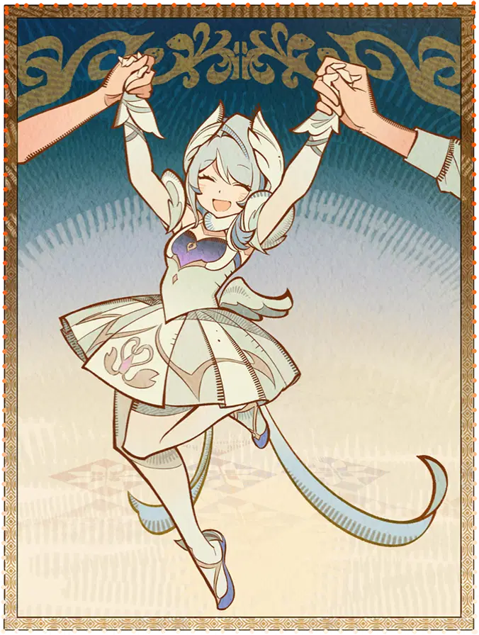

Одетта Спессива — прима-балерина и агент Фатуи. В детстве, после гибели отца-военного и
инвалидности
матери-балерины, она согласилась на опеку Синьоры, чтобы спасти семью от нищеты. Из-за жестоких
тренировок Одетта научилась подавлять физическую боль и со временем обрела силу Звёздного клина.
Сначала Одетта ненавидела Синьору. Однако Предвестница втайне позаботилась о будущем девочки: с
помощью Арлекино она спрятала в устройство кор игнис пламя, способное сжечь воспоминания и
освободить Одетту от службы. Только после гибели Синьоры Одетта поняла наставницу, простила её и
исполнила прощальный танец у её гробницы.
Параллельно Одетта вела двойную жизнь. Ненавидя проект «Стужа», погубивший её отца, она вступила
в
подпольный Рокот под псевдонимом Лелек. Она шантажировала чиновников и саботировала проект, но
после
инцидента с убийствами в Королевском театре ей пришлось раскрыть себя. Из Рокота её вывели, но
оставили право вернуться под другим именем.
Вся её жизнь отразилась в балете «Чёрный лебедь». Долгое время она изнуряла себя борьбой, но,
лишь
приняв свои роли в Фатуи и театре, Одетта познала своё истинное «я». Она перестала бороться с
судьбой, доверилась своим желаниям и наконец смогла исполнить идеальную партию на сцене.
